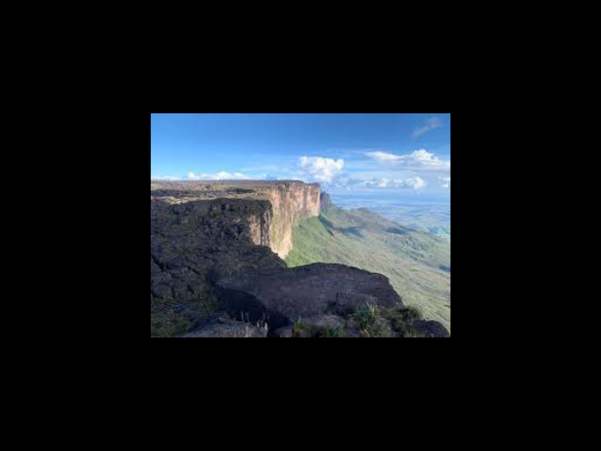

O Roraima é o estado mais ao norte do Brasil, localizado na região Norte e conhecido por suas paisagens naturais impressionantes, rica diversidade cultural e forte presença indígena. Sua capital, Boa Vista, é a única capital brasileira totalmente situada acima da Linha do Equador e concentra grande parte da população do estado. Roraima faz fronteira com a Venezuela e a Guiana, o que contribui para sua importância estratégica na integração com outros países da América do Sul. O estado possui economia baseada na agropecuária, comércio, serviços e mineração, além de abrigar atrações naturais famosas, como o Monte Roraima, que inspira visitantes do mundo inteiro. Com extensas áreas de preservação ambiental e comunidades indígenas tradicionais, Roraima desempenha papel importante na conservação da Amazônia e da cultura regional brasileira.

voltar